|
Lekha Revankar I'm a 3rd year PhD student at Cornell University, where I work on computer vision and machine learning advised by Prof. Bharath Hariharan and Prof. Kavita Bala Previously, I did my M.S. and B.S at the University of Maryland, College Park under the supervision of Prof. Ming Lin. Currently I am taking a year to do research full time at Planet in San Francisco! Email / Resume / Google Scholar / GitHub |
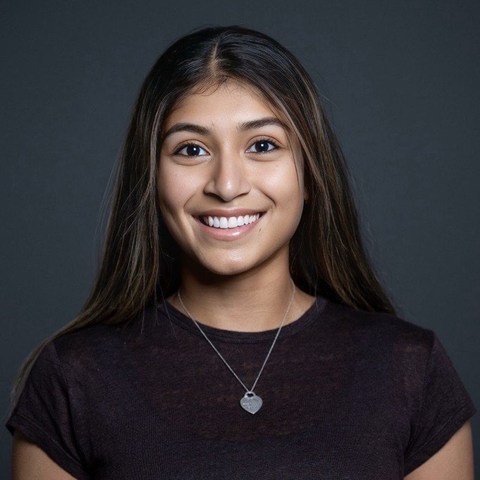 |
ResearchI work on multi-modal models for scalable visual understanding. I'm particularly interested in finding needles in haystacks, whether spatially (detecting small objects in large scenes), or temporally (surfacing rare events across long sequences). The goal is to enable recognition and discovery in large, unlabeled real-world data. I'm currently exploring these problems in the Earth observation domain. |
Select PublicationsPlease check out my Google Scholar for a complete list of publications. |

|
MONITRS: Multimodal Observations of Natural Incidents Through Remote Sensing
Shreelekha Revankar, Utkarsh Mall, Cheng Perng Phoo, Kavita Bala, Bharath Hariharan NeurIPS D&B, 2025 Spotlight (top 2.8%) paper / code / project page We introduce MONITRS, pairing temporal satellite imagery of ~10,000 natural disasters with natural language descriptions from news articles. Fine-tuned models achieve 88.69% accuracy in disaster classification, outperforming state-of-the-art remote sensing models by over 38%, establishing a new benchmark for automated disaster monitoring. |
|
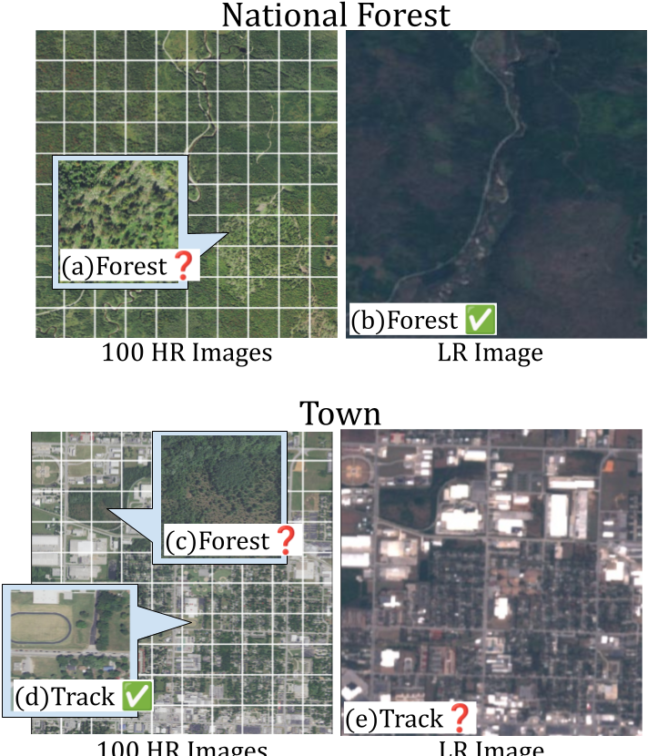 |
Scale-Aware Recognition in Satellite Images under Resource Constraints
Shreelekha Revankar, Cheng Perng Phoo, Utkarsh Mall, Bharath Hariharan, Kavita Bala ICLR, 2025 paper / code / project page We introduce a new approach to scale-aware recognition in satellite imagery under resource constraints. Our approach allows one to accurately detect various concepts using a fixed budget of HR imagery, outperforming entirely HR baselines by more than 26% mAP in zero-shot techniques, and more than 8% mAP in supervised techniques using 5× fewer HR images. |
News
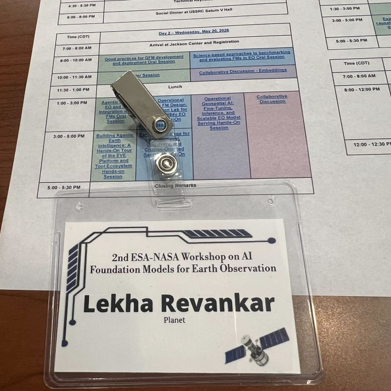 
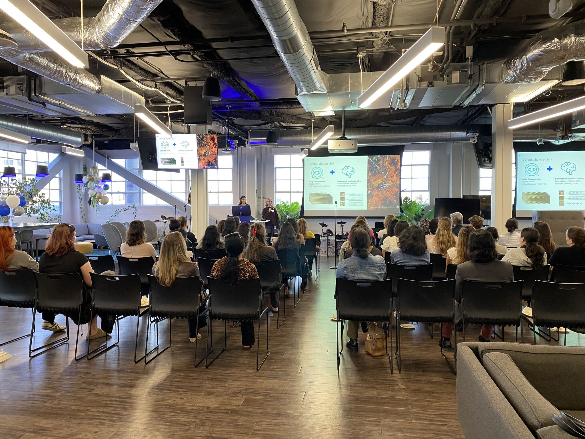 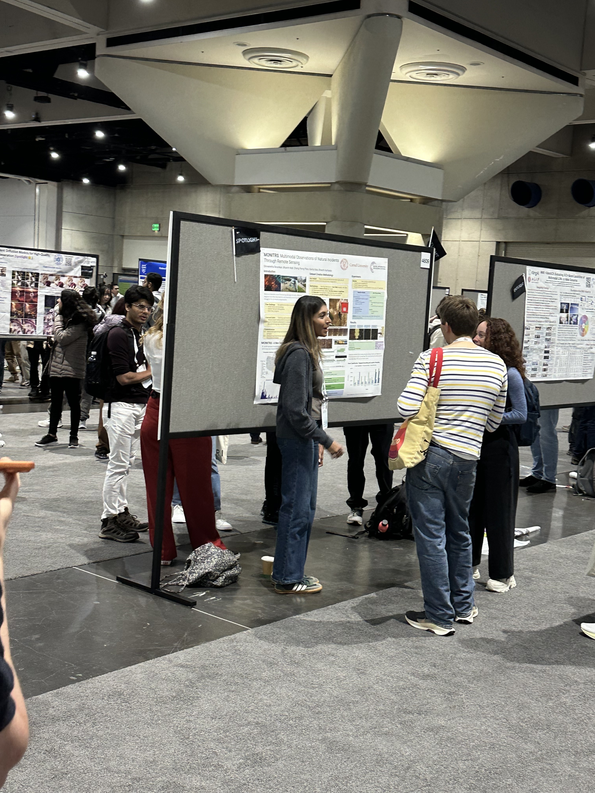 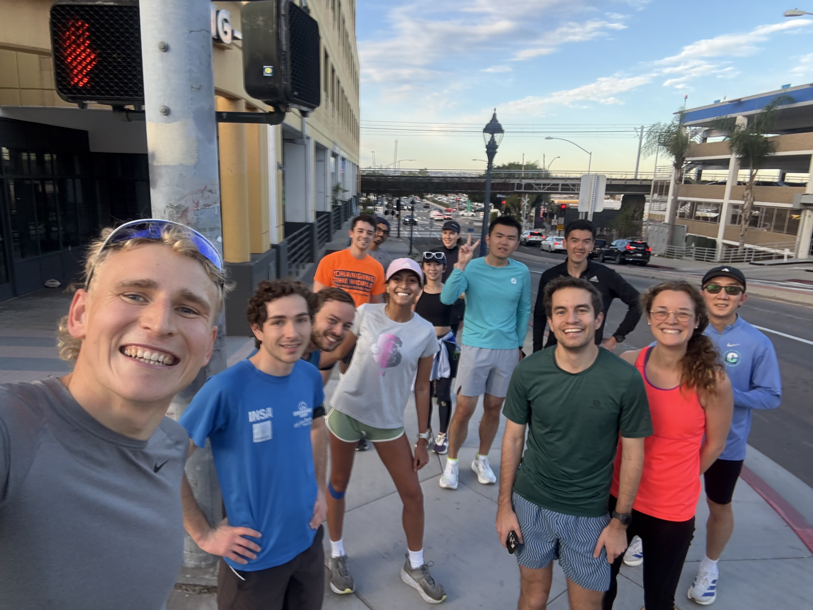 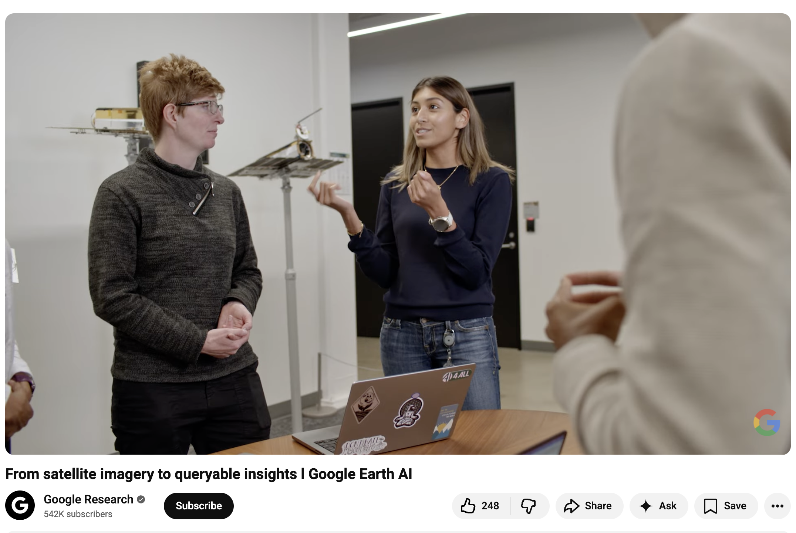 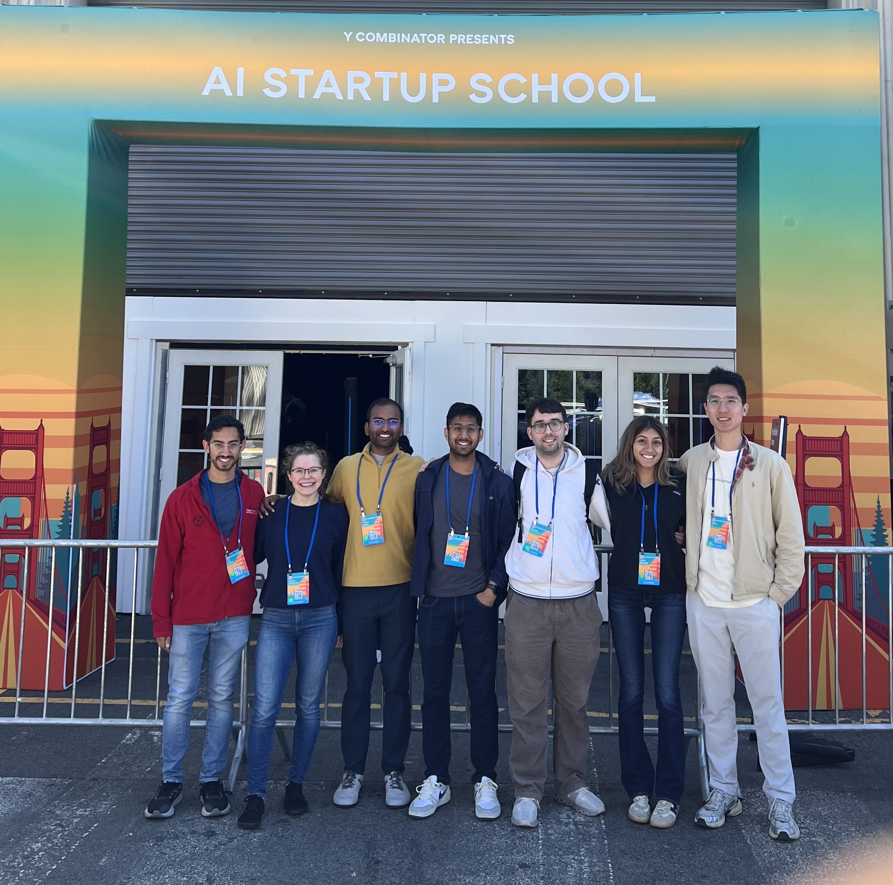 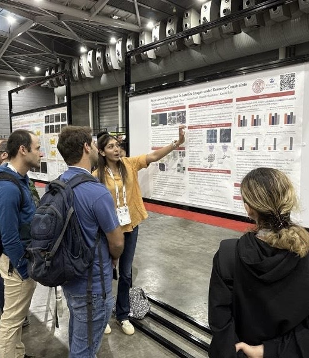 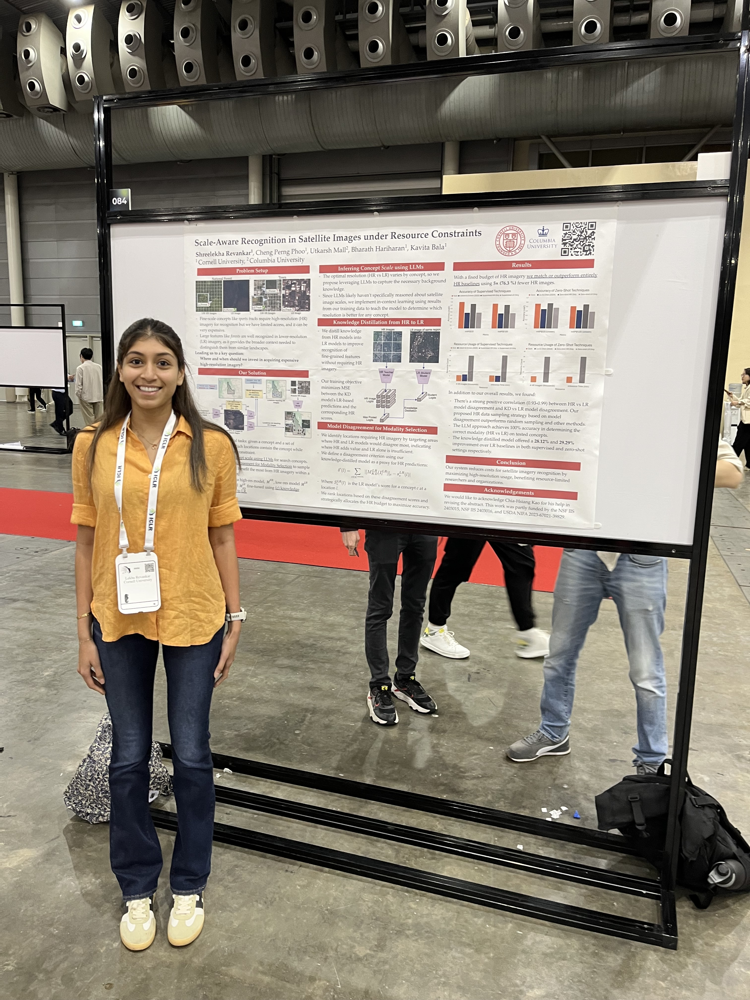 
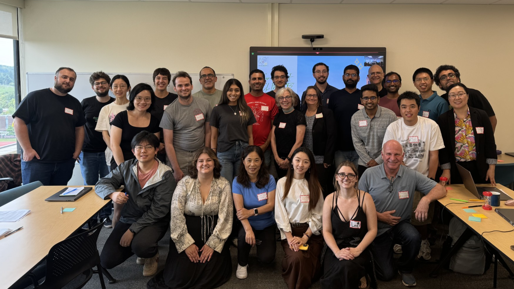 |
|
Website template inspired by Jon Barron |